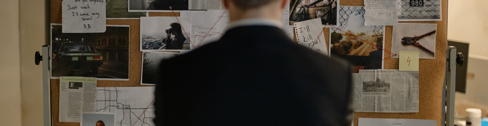

Mise en scene, audio and animation work together as powerful media codes. The objects you place in the frame,
the sound you design and the way things move all change how the audience feels and what they understand.
What Is Mise en Scene, Audio and Animation?
Mise en scene (pronounced “meez-on-sen”) is a French term that means “putting on stage”.
It covers everything that appears in the frame of a shot:
setting, props, costume, make-up, lighting and how actors are arranged.
Alongside this, audio (music, sound effects, dialogue and ambient sound)
and animation (2D, 3D and motion graphics) are used to add energy, explain ideas
and create atmosphere. In R093 you must explain how these codes create meaning and affect the audience.
Key Areas to Know
- Mise en scene – setting, props, costume, make-up, colour, actor placement.
- Audio – dialogue, music, sound effects (SFX), ambient sound, voiceover.
- Animation – 2D, 3D, stop-motion and motion graphics for titles and interfaces.
Why It Matters in the Exam
- Questions may ask you to identify elements of mise en scene or sound in a product.
- You could be asked to explain how they create mood or represent a character.
- Longer questions might ask you to justify mise en scene, audio and animation choices for a new product.
Mise en Scene, Audio & Animation at a Glance
This infographic reminds you how what appears in the frame, what you hear and how things move all
work together as media codes.
- Setting: location, time period and environment that create context.
- Props: objects that hint at character, genre and storyline.
- Costume & make-up: show personality, status, era and genre.
- Colour: warm vs cool palettes to create mood and symbolism.
- Actor placement: where characters stand or sit to show relationships and power.
- Exam link: write “The use of [mise en scene element] suggests…” and finish with meaning or representation.
Setting · Props · Costume
- Dialogue: what characters say and how they say it.
- Music: sets mood and pace (tempo, key, instrumentation).
- Sound effects (SFX): make worlds feel real and emphasise actions.
- Ambient sound: background noise that stops scenes feeling empty.
- Animation: 2D, 3D and motion graphics to explain ideas and add energy.
- Exam tip: link sound and animation to purpose, genre and how the audience feels at key moments.
Sound · Motion · Atmosphere
Mise en Scene – What’s in the Frame?
Mise en scene is about the visual design of a shot. For each element, think:
“What does this tell the audience?” and “How does it support the purpose and genre?”
Setting and Location
- Urban streets – modern, busy, sometimes dangerous or exciting.
- Office or classroom – professional, educational, everyday life.
- Home – personal life, family, comfort or conflict.
- Fantasy or sci-fi worlds – escapism, adventure, technology.
Props
- Technology (laptops, phones, consoles) – modern, connected, youth.
- Sports equipment – energetic lifestyle, health, competition.
- Luxury items (jewellery, expensive car) – wealth, aspiration, status.
Costume and Make-up
- Business suit – formal, serious, professional.
- Streetwear or casual clothes – relaxed, youth, everyday life.
- Sports kit – active, performance-focused, dynamic.
- Make-up or special effects – can show glamour, illness, injuries or fantasy creatures.
Colour and Composition
- Warm colours (red, orange, yellow) – energy, passion, urgency.
- Cool colours (blue, green) – calm, technology, nature or sadness.
- Framing and positioning – who is in the centre, foreground or background? Who looks dominant?
Audio – Sound and Meaning
Audio is a vital part of media products. Even when you can’t see anything (for example, radio or podcasts),
sound can still create images in the audience’s mind.
Types of Audio
-
Dialogue – characters speaking.
Effect: reveals personality, relationships, information and tone.
-
Music – soundtrack or theme.
Effect: sets mood, builds emotion and helps with branding (e.g. a recognisable jingle).
-
Sound effects (SFX) – footsteps, phones, doors, game sounds.
Effect: adds realism and feedback for user actions.
-
Ambient sound – background noise like traffic, birds, crowd sounds.
Effect: makes a location feel real and helps the audience understand where they are.
-
Voiceover – a narrator speaking over visuals.
Effect: explains information, guides the audience, can persuade or reassure them.
Diegetic vs Non-diegetic Sound
-
Diegetic sound – sound that characters in the world can hear
(e.g. a radio in the scene, car engine, dialogue).
-
Non-diegetic sound – sound only the audience hears
(e.g. a movie soundtrack, commentary, added sound effects in editing).
In exam answers, it is useful (but not essential) to use these terms correctly when explaining how
sound is used.
Animation and Motion Graphics
Animation is the illusion of movement created by showing a sequence of images or frames.
It can be used for characters, logos, icons and user interfaces.
Types of Animation
-
2D animation – flat artwork, cartoons or motion graphics.
Used in: explainer videos, adverts, mobile games, interface animations.
-
3D animation – 3D models rendered with lighting and textures.
Used in: films, high-end games, product visualisations.
-
Stop-motion – physical models moved slightly between photos.
Used in: stylised films, creative adverts, educational clips.
-
Motion graphics – animated text, logos and shapes.
Used in: title sequences, lower thirds, animated infographics and logo stings.
Why Use Animation?
- To simplify complex information using icons and diagrams.
- To make interfaces feel responsive and modern (button, menu and transition animations).
- To appeal to younger audiences with colourful, stylised visuals.
- To show something that cannot be filmed easily in real life (e.g. inside a machine or fantasy world).
Games to Practise Mise en Scene, Audio and Animation
These games help you apply knowledge of media codes, colour, sound and explanation skills
when analysing products and answering exam-style questions.
Product design
Mise en Scene Detective
Study each scene carefully and identify key mise en scene elements such as costume, props,
colour and composition. Decide how each choice shapes meaning and audience response.
Explain
Mise en scene
Visual codes
Product design
Media Codes Challenge
Identify mise en scene elements, audio and other codes in media examples, then explain
how they create meaning and impact.
Explain
Codes & conventions
Mise en scene
Product design
Colour Critic
Explore how colour, contrast and layout support mise en scene choices in posters, logos and
magazine covers.
MCQs
Colour
Branding
Mixed exam
Explain It! 2-Mark Engine
Practise short explanations about how mise en scene and sound choices affect the audience,
using clear 2-mark structures.
2 markers
PEE structure
Audio & visuals
Mixed exam
Exam Styles Showdown
Compare different student answers about mise en scene, audio and animation and choose the one
that would score the most marks.
Exam-style
Command words
Model answers
Exam Practice – Mise en Scene, Audio and Animation
Q1. State one element of mise en scene shown in a film still. (1 mark)
Technique: Name one clear element such as costume, setting, props, lighting or actor placement.
Q2. Explain one way music can be used in a charity advert. (2 marks)
Technique: Make one point about how the music sounds (e.g. slow and emotional) and
explain how it affects the audience.
Example structure: “Music is used to… This makes the audience feel…”
Q3. Describe how props and costume can be used to show that a character is wealthy. (3 marks)
Technique: Give specific examples (e.g. designer clothing, expensive watch, luxury car)
and explain how each one signals wealth and status.
Q4. Explain two reasons why an educational website might use animation on its homepage. (4 marks)
Technique: For each reason, say what the animation does (e.g. guides the user, simplifies
information) and how this helps the audience understand or stay engaged.
Q5. A streaming service is launching a new animated series aimed at teenagers. Discuss how mise en scene,
audio and animation style could be used in the opening sequence to attract this audience. Provide justified
recommendations. (9 marks)
Technique: Organise your answer into paragraphs for mise en scene, audio and animation.
Explain how each choice appeals to teenagers (colourful designs, energetic music, relatable props and settings)
and finish with a justified conclusion.
- Paragraph 1: Mise en scene – setting, props, costume and colour choices.
- Paragraph 2: Audio – soundtrack, sound effects and voice style.
- Paragraph 3: Animation – 2D or 3D style, pace and character movement.
- Final paragraph: Conclusion – which combination will be most effective and why.
Can You Now…?
- Identify key elements of mise en scene in a media product.
- Explain how different types of audio affect mood and meaning.
- Describe why a producer might choose animation or motion graphics.
- Use mise en scene, audio and animation examples in exam-style answers with clear explanation and justification.